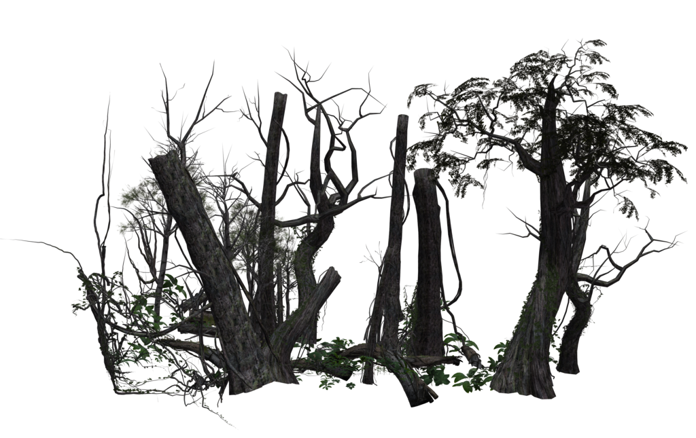

Goldilocks and the Three BearsA Choose Your Own Adventure Story |
 |
Goldilocks went inside.
First she tasted the porridge of the great, huge bear, and that was hot. And then she tasted the porridge of the middle bear, and that was cold. And then she went to the porridge of the little, small wee bear, and tasted that.